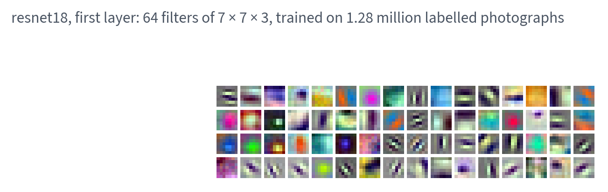
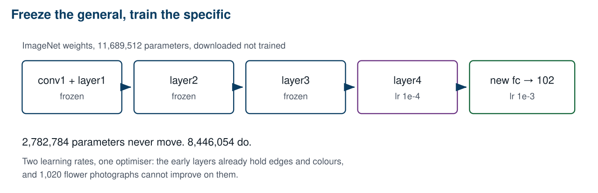
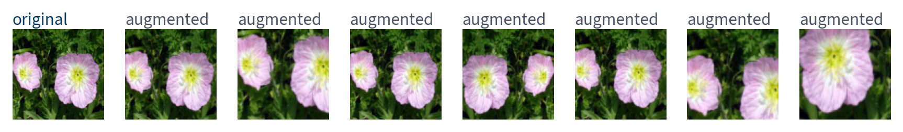
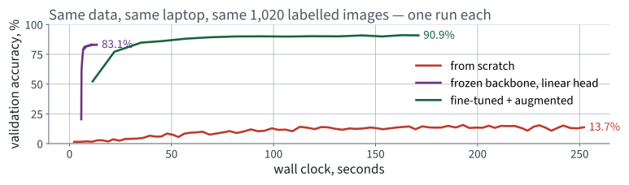
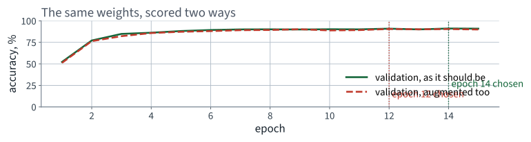

Flowers102
Lecture 13 Géron Ch. 12
Applications of Machine Learning
BSc Mathematics of Artificial Intelligence · Third year
| Model | Test accuracy |
|---|---|
| Always the commonest species | 3.87% |
| Convolutional network from scratch, 4,807,494 parameters | 15.3% |
| What the operator needs | 90% |
Lecture 12 built that network and it is not close. Its architecture is not the problem — the same shape of network solves Fashion-MNIST comfortably.
Which suggests the repair: do not learn them. Somebody already has.
No new derivation today — Lecture 12’s parameter count is the whole argument, and this lecture is what you do about it. examinable the method, and the conditions under which it fails.
First fifteen minutes
15 minutes
Not “flowers”. A hierarchy, and only the bottom of it is general:
| Depth | What the filters respond to | Transfers? |
|---|---|---|
| first block | edges, colour opponency, simple gradients | to essentially anything |
| middle blocks | textures, repeated motifs, part-like shapes | to most natural images |
| last blocks | object-specific configurations | only to similar objects |
| the head | the 1,000 ImageNet classes | not at all — it is replaced |
Which is the whole recipe: keep the bottom, adapt the top, replace the head. Freezing is not a compromise forced by compute — it is a statement that those layers already encode what you would otherwise be trying to learn from 1,020 images.
Nothing here is a bug. That is what makes this lecture a different kind of repair from Lecture 2.
| Accuracy | |
|---|---|
| Training set | 71.8% |
| Validation set | 13.7% |
| Gap | 58 points |
Lecture 5 gave this shape a name: a persistent gap between two plateaus is variance.
Not bias. The network fits the training set to 71.8% and is still climbing — there is nothing wrong with its capacity.
| Cure | Can we? |
|---|---|
| More training data | no — labelling is the whole cost |
| More constraint on the hypothesis space | yes, and we have already done it once |
Weight sharing was a constraint, and it bought a factor of 5,478,275. The question is where the next constraint comes from.
After 80 epochs the first layer’s 4,704 weights still had cosine similarity 0.9694 with the random vector they started from, and nothing you could look at had appeared.
The same layer — 7 × 7 × 3 filters, first in the stack — from a network trained on ImageNet.
Not one of them is about flowers, or about any of the 1,000 classes that network was trained on. They are about photographs.

9,408 numbers, and every one of them is a fact about photographs rather than about the 1,000 classes they were fitted on.
Our 1,020 labels should be spent on the only thing that is specific to us: which combination of parts is which species.
The repair is therefore not a better architecture, a longer run or a cleverer schedule. It is starting from weights that already work.
The method
40 minutes · examinable
| Family | Params | Use it when |
|---|---|---|
| MobileNet / EfficientNet-B0 | ~5 M | the budget is CPU, or inference has to be fast |
| ResNet-18 / ResNet-50 | 11 / 25 M | the default; well understood and widely reproduced |
| ConvNeXt, ViT-B | ~88 M | plenty of data and plenty of compute |
not examinable — engineering The names change every year. The trade-off does not.
| Labelled images per class | What is usually worth doing |
|---|---|
| fewer than about 20 | linear probe only; fine-tuning overfits |
| tens | probe, then unfreeze the last block with a small rate |
| hundreds | unfreeze progressively, differential rates |
| thousands and up | fine-tune everything; consider training from scratch |
Flowers102 gives us ten per class in the training split. That is the first row, and it is why the frozen probe does so much of the work today.
These are orders of magnitude, not thresholds. The measurement that settles it for your corpus is the probe against the fine-tune, on the same validation split.
requires_grad = False stops the gradients. It does
not stop batch normalisation updating its running mean and variance, which
happens in the forward pass and has nothing to do with autograd.
train() mode keeps rewriting
its normalisation statistics from your batches. The weights are fixed and
the network still drifts — and it drifts towards a corpus of 1,020
images, which is the opposite of what you froze it for.
The fix is model.eval() on the frozen part,
which is the same call as Lecture 10’s dropout bug and for the same
underlying reason: two modules behave differently in the two modes, and the
mode is not implied by anything else you have set.
eval() mode, extract features onceSteps 3, 4 and 5 each end in measure. A recipe without them is a ritual.
Take a network trained on a large labelled corpus, keep everything except its classifier, and train a new classifier on your own small corpus.
from torchvision.models import resnet18, ResNet18_Weights
weights = ResNet18_Weights.DEFAULT
net = resnet18(weights=weights)
| Value | |
|---|---|
| Parameters | 11,689,512 |
| Trained on | ImageNet, 1,000 classes |
| Output before the classifier | 512 numbers |
Residual networks are Chapter 12's own example architecture. We use it; the residual connection itself is the book's, not ours to re-derive.
>>> ResNet18_Weights.DEFAULT.transforms()
ImageClassification(
crop_size=[224]
resize_size=[256]
mean=[0.485, 0.456, 0.406]
std=[0.229, 0.224, 0.225]
interpolation=InterpolationMode.BILINEAR
)
Use these statistics, not the ones you computed in the previous lecture. The network's first layer expects inputs on the scale it was trained with, and substituting your own is a silent, uncrashing degradation.

2,782,784 parameters never move. 8,446,054 do.
for p in net.parameters():
p.requires_grad = False
net.fc = nn.Linear(512, 102) # a fresh module: requires_grad is True
print(sum(p.numel() for p in net.parameters() if p.requires_grad))
# 52326
opt = torch.optim.Adam(net.fc.parameters(), lr=1e-3)
Replacing fc after the loop is not an accident
of ordering — a newly constructed module has
requires_grad=True, so the head is trainable and nothing else
is.
requires_grad = False actually doesbackward() does not fill p.gradeval(): dropout and
batch-norm behaviour are a separate switchPoint three is the trap. Freezing the weights of a batch-norm layer does not freeze its running statistics.
body = nn.Sequential(*list(net.children())[:-1]).eval()
with torch.no_grad():
F_train = torch.cat([body(xb).flatten(1) for xb, _ in train_loader])
# F_train is (1020, 512). Now train a linear model on a table.
The 1,020 images pass through the backbone once rather than once per epoch. 8 seconds for the features, 12 seconds for 60 epochs of the head.
| Model | Test accuracy | Wall clock |
|---|---|---|
| From scratch, 80 epochs | 15.3% | 364 s |
| Frozen backbone, linear head | 81.2% | 13 s |
27× faster
and 66 points better.
The variance problem was not solved. It was moved to a dataset large enough to absorb it.
The early layers hold edges and colours, which are not about flowers. The late layers hold parts and textures, which partly are.
for p in net.layer4.parameters():
p.requires_grad = True
opt = torch.optim.Adam([
{"params": net.layer4.parameters(), "lr": 1e-4},
{"params": net.fc.parameters(), "lr": 1e-3},
])
One optimiser, two parameter groups, two learning rates. That is all a “differential learning rate” is.
| Part of resnet18 | Parameters |
|---|---|
| conv1 through layer3, frozen | 2,782,784 |
| layer4 and the new head, trained | 8,446,054 |
Three quarters of the parameters are in the block we unfroze.
Lecture 12’s memory calculation, mirrored in a design decision: parameters concentrate in the deep, low-resolution layers, so freezing the general layers freezes very few of them. What we froze is the part that does general work, not the part that is large.
| Starting point | Rate | |
|---|---|---|
| new head | random | large — it has everything to learn |
| pretrained block | already good | small — it has something to lose |
Give the backbone the head's learning rate and the first few batches — whose gradients come through a randomly initialised head — will damage the representation you downloaded. It does not crash; the accuracy simply comes out lower and you conclude that transfer learning does not work.
net.train()
for xb, yb in train_loader:
opt.zero_grad()
lossf(net(xb), yb).backward()
opt.step()
Every parameter in layer1 is frozen. Something
in layer1 changes anyway.
Thirty seconds before the next slide.
requires_grad = False does nothing to them — no
gradient is involvedtrain() mode quietly replaces
ImageNet's statistics with the statistics of 1,020 flower
photographs, in batches of 32
net.train()
for m in [net.bn1, net.layer1, net.layer2, net.layer3]:
m.eval() # freeze the buffers too
We cannot buy labels. We can show the network a different view of the same labelled image every epoch.
Each is a transformation the label is known to survive. That is the entire criterion, and it is a modelling decision, not a library call.

The label is the same in all eight. That is the only thing that makes this legitimate.
And a transformation the label does not survive is a labelling error you manufactured. A vertical flip is fine for flowers and wrong for handwritten digits.
train_tf = transforms.Compose([
transforms.RandomResizedCrop(224, scale=(0.55, 1.0)),
transforms.RandomHorizontalFlip(),
transforms.ToTensor(),
transforms.Normalize(IMAGENET_MEAN, IMAGENET_STD),
])
eval_tf = transforms.Compose([ # val AND test
transforms.Resize(256),
transforms.CenterCrop(224),
transforms.ToTensor(),
transforms.Normalize(IMAGENET_MEAN, IMAGENET_STD),
])
Two pipelines, deliberately. Keep reading — there is a reason this slide exists before the assistant failure and not after it.
| Model | Test accuracy | Wall clock |
|---|---|---|
| From scratch | 15.3% | 364 s |
| Frozen backbone, linear head | 81.2% | 13 s |
| layer4 unfrozen + augmentation | 88.0% | 176 s |
15.3% to 88.0%, and it took 176 seconds against 364.

The horizontal axis is the one to read. The from-scratch run is still climbing when the other two have finished.
| Change | Test accuracy | Gain |
|---|---|---|
| from scratch | 15.3% | — |
| + pretrained backbone, frozen | 81.2% | 65.9 pts |
| + layer4 unfrozen, no augmentation | 86.3% | small |
| + augmentation | 88.0% | 1.7 pts |
Report the ablation, not just the final number. Almost all of the gain is in one row, and saying which row is what makes the result useful to somebody else.
eval()Steps 2 and 3 in that order, always. A frozen-head number you can compute in ten seconds is what tells you whether step 3 helped at all.
Fine-tune the whole backbone at the rate you would use to train from scratch, and the first gradient step overwrites the features you came for. The network then relearns them from 1,020 images, badly.
This is why differential learning rates exist, and why the usual recipe warms up the new head first while everything else is frozen: the head starts random, and its early gradients are large enough to damage anything they reach.
| Transform | What it asserts | True for flowers? |
|---|---|---|
| horizontal flip | mirror image is the same class | yes |
| random resized crop | a part identifies the whole | usually |
| colour jitter | hue is not diagnostic | dangerous — colour is a flower feature |
| vertical flip | upside-down is the same class | often, but not for scenes |
| rotation | orientation carries no information | yes here |
A flipped digit is not the same digit, and a colour-jittered flower may not be the same species. Augmentation that asserts something false about the task does not regularise the model — it teaches it something wrong, quietly, and the validation set agrees because it is augmented too.
The opposite of the mistake two slides ago, and it is not a contradiction: augment the test image several times, predict each, and average the predictions.
Say which you are doing. “We used augmentation at test time” is ambiguous between a legitimate ensemble and the bug on the previous slide.
Before the ablation
10 minutes · examinable
It is easy to build one pipeline and hand it to both loaders. The training loader wants random crops and flips; the evaluation loader must not have them.
Nothing raises. The only symptom is that the number moves when nothing else did.
Score one fixed set of weights — the fine-tuned model above — on the augmented validation set, 10 times:
| Accuracy | |
|---|---|
| on the clean validation set | 90.88% |
| augmented, mean of 10 | 90.02% |
| augmented, spread | 1.57 points |
The same weights, the same set, 1.57 points apart.
Lecture 12's reviewer question, arriving again: a deterministic function of fixed weights and fixed data does not wobble.

Clean validation peaks at epoch 14; augmented validation peaks at epoch 12. Early stopping on the second keeps the wrong checkpoint.
| Consequence | Size, measured |
|---|---|
| The reported number is pessimistic | 0.86 points low |
| The number is not reproducible | 1.57 points of noise |
| Model selection uses a noisy criterion | a different epoch chosen |
The first is harmless. The third is not, and it is the one nobody notices, because a pessimistic number feels like the safe kind of wrong.
a = evaluate(model, val_loader)
b = evaluate(model, val_loader)
assert a == b, f"evaluation is not deterministic: {a} vs {b}"
Run every evaluation twice. If the two disagree, something in the evaluation path is random — augmentation, dropout still active, or a shuffled loader whose batches are averaged rather than pooled.
examinable Name three things that make an evaluation non-deterministic, and the check that catches all three.
| Question | The specific answer |
|---|---|
| 1 | normalisation statistics computed over all 8,189 images |
| 2 | the backbone was fitted on ImageNet, not on your data — say so when you report |
| 3 | 224, not 128: the pretrained weights fix the input size |
| 4 | nothing is dropped here — count anyway, and say zero |
| 5 | padding=0, train() mode on frozen batch-norms, one transform for two splits |
| Failure | Raises? | Cost, measured |
|---|---|---|
| Normalisation statistics from the whole dataset | no | 0.25 points |
| Augmentation applied to the validation set | no | 1.57 points of noise |
Frozen backbone left in train() mode | no | statistics drift, silently |
All three run. All three produce a plausible number. The first is cheap on this dataset and expensive on a smaller one.
The last fifteen minutes
15 minutes
| Model | Test accuracy | Wall clock |
|---|---|---|
| Uniform guess | 0.98% | — |
| Commonest species | 3.87% | — |
| Convolutional net, from scratch | 15.3% | 364 s |
| Frozen backbone, linear head | 81.2% | 13 s |
| Fine-tuned + augmented | 88.0% | 176 s |
| Operator's requirement | 90% | — |
73
points of accuracy, from 15.3% to 88.0%
27×
less wall clock for the frozen probe, which alone is already 81.2%
Better and cheaper. That combination is rare enough to be worth naming when it happens.
| Wall clock | Against from scratch | |
|---|---|---|
| From scratch, 80 epochs | 364 s | — |
| Frozen backbone | 13 s | 27× less |
| Fine-tuned at 224 × 224 | 176 s | 2.1× less |
The fine-tune is only modestly faster, because it runs a much larger network on much larger images. The frozen probe is the one that is dramatically cheaper — and it is also the one you should run first, every time.
| Situation | Why |
|---|---|
| Your images are unlike the corpus — radar, spectrograms, microscopy | the learned features are about natural photographs |
| Your task is not classification | the backbone is trained to discard position |
| You have millions of labelled examples | then the constraint is costing you, not helping |
Test it the same way: freeze, probe, and compare with the from-scratch baseline. The frozen probe takes seconds, so there is never an excuse for not knowing.
The first of those is the next brief, and thread 8 already told you why it is hard.
| Topic | Chapter |
|---|---|
| Convolutional layers, filters, feature maps, pooling | 12 |
| ResNet and the residual connection | 12 |
Pretrained models from torchvision | 12 |
| Transfer learning and freezing layers | 12 |
| Data augmentation | 12 |
| Reverse-mode autodiff and what it stores | 9, appendix |
| Differential learning rates, memory profiling | not examinable |
Before you train a vision model from scratch, spend 20 seconds measuring what a frozen pretrained backbone and a linear head already give you.
On this application that number was 81.2% against 15.3%. You are entitled to train from scratch. You are not entitled to do it without knowing what you turned down.
| Approach | What is fitted | Relative cost |
|---|---|---|
| From scratch | 4.8 M parameters | longest, and worst here |
| Frozen backbone + linear head | the head only | features extracted once, then seconds per epoch |
| Fine-tune last block | head + one block | a few times the probe |
| Fine-tune everything | all of it | approaching from-scratch cost, without its risk |
The frozen probe is cheap for a specific reason: with the backbone fixed, its output for a given image never changes, so you compute it once and fit the head on the cached features. That is not an optimisation, it is a consequence of freezing.
The first two are the subject of Lecture 14, and they need a different notion of what a correct answer is — which is why that lecture opens by deriving one.
The measured version of that sentence is the ablation table: from 15.3% to well past it, on the same corpus, the same split and the same evaluation, by not training most of the network.
Not presented — for afterwards
five, in the style of the written paper
Solutions on Lecture 14’s deck.
Solutions on Lecture 14’s deck.
The five set at the end of Lecture 12
not part of this lecture
1. A dense layer mapping a $3\times128\times128$ input to a $32\times128\times128$ output has…
$32\times3\times7\times7 = 4{,}704$. Neither $H$ nor $W$ appears.
2. State the difference between equivariance and invariance, and say which of the two segmentation cannot afford.
Equivariance: $f(T x) = T f(x)$. Invariance: $f(T x) = f(x)$. Segmentation cannot afford invariance.
3. Convolution is equivariant to translation on the interior of an image but not at the border. Give the reason.
Zero padding invents input that was not there, so a shift moves real content into invented content.
4. A training run fails with out-of-memory. State which of parameters and activations usually dominates, and…
Activations dominate; halve the batch.
5. Parameters and activations are anti-correlated across a convolutional stack. State where each is…
Activations are largest near the input, parameters near the output. Dense intuition points the wrong way.
Lecture 14 · Géron Ch. 12
IoU and mAP, derived — and why IoU gives no gradient when boxes are
disjoint
The maximum that repairs the non-monotonicity of Lecture 3
Non-maximum suppression, semantic and instance segmentation
Run the Lecture 13 notebook first